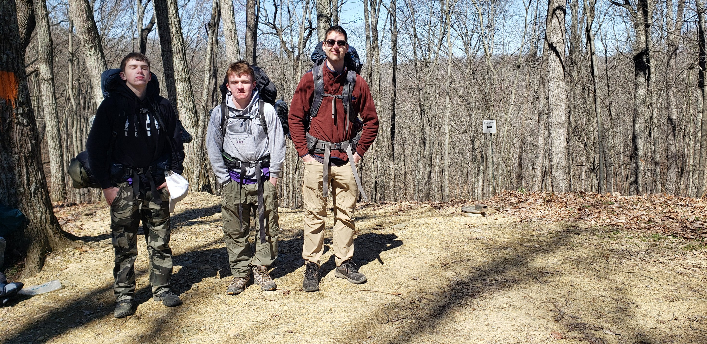
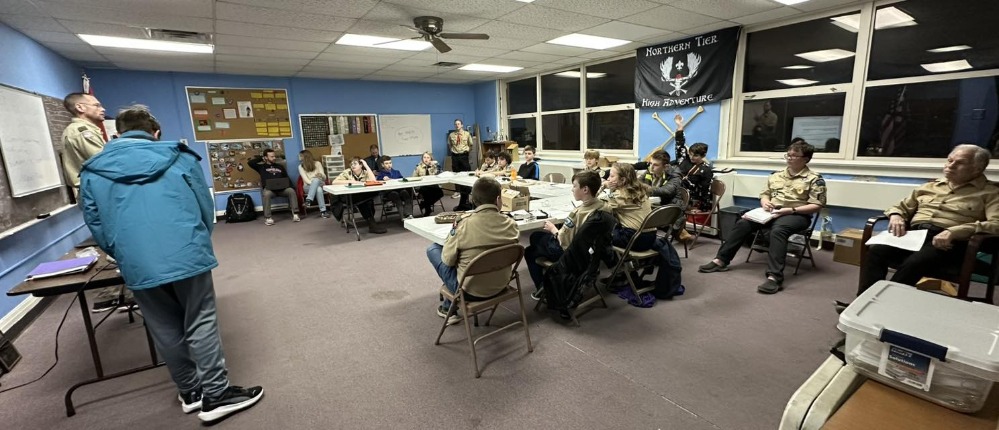

News
Red River Gorge Backpacking Trip
Our troop is eagerly preparing for an exciting backpacking trip to Red River Gorge, a destination known for its stunning rock formations and rugged trails. In the weeks leading up to the adventure, our scouts have been training through practice hikes, learning to pack efficiently, and refining their navigation skills. Gear checks ensure everyone has essential equipment, from lightweight tents to proper hiking boots, while meal planning focuses on high-energy, easy-to-carry food. Safety is a priority, with scouts reviewing first aid, Leave No Trace principles, and emergency protocols. As the trip approaches, excitement is building, and our scouts are ready to take on the challenges and rewards of this unforgettable outdoor adventure.
Troop Elections
Our troop recently held elections, and we are excited to welcome our new Senior Patrol Leader, Jonathan, who is already making big plans for his six-month term. The election process was a great opportunity for scouts to step up as leaders, share their ideas, and take on new responsibilities. After a competitive race and thoughtful speeches, Jonathan was chosen to lead, and he has ambitious goals for improving the troop. He plans to introduce new training programs to strengthen scout skills, organize more challenging outdoor adventures, and enhance communication between patrols to ensure everyone stays engaged. Additionally, he is focused on making meetings more interactive and fun while reinforcing leadership development within the troop. With his enthusiasm and dedication, Jonathan is set to bring fresh energy to the troop, and we are all looking forward to seeing the positive changes he will make in the months ahead.
New Website Launch

Our Troop is excited to announce the launch of our brand-new website! This updated platform is designed to keep Scouts, parents, and leaders informed with the latest news, events, and resources. With an easy-to-navigate layout, you’ll find important announcements, the troop calendar, merit badge opportunities, and helpful scouting materials all in one place. The new website will serve as a central hub for communication, ensuring that everyone stays connected and up to date. Be sure to check it out and explore all the great features—we can’t wait for you to experience it!
Our Location
Mission
Our mission is to foster the growth and development of young men and women by providing opportunities for leadership, service, and personal growth through the values and principles of Scouting. We are committed to creating an inclusive and supportive environment where Scouts can develop character, responsibility, and a sense of community while living the Scout Oath and Law. Through outdoor adventures, merit-based achievements, and community service, our troop aims to prepare each Scout to become a responsible, capable, and compassionate leader, ready to contribute to society and make a positive impact on the world around them.
History
Troop 375 has a rich history of serving the youth in our community, dating back to its founding in [insert year]. Over the years, our troop has remained committed to providing a safe and nurturing environment where Scouts can learn the values of leadership, teamwork, and community service. From its early days, Troop 375 has fostered a strong tradition of adventure, skill development, and service to others. The troop has celebrated numerous milestones, including countless Eagle Scout achievements, community service projects, and participation in local and national events. Throughout its history, Troop 375 has remained dedicated to its mission of preparing young men and women to lead with character and integrity. Today, the troop continues to build on this foundation, empowering Scouts to pursue their personal goals, while making a lasting impact on the community.